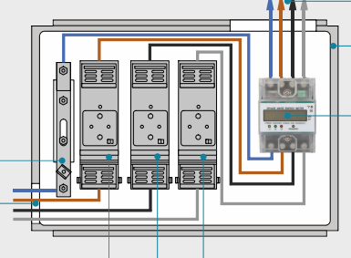
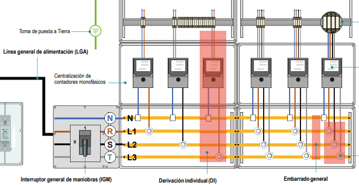

Instalaciones de Enlace
Sistemas de conexión entre la red de distribución y las instalaciones interiores de usuario - Manual de Bomberos del Ayuntamiento de Madrid
🔌 Definición y Componentes de Instalación de Enlace (IE)
Definición
La red de distribución termina en la Caja General de Protección (CGP) o en la Caja de Protección y Medida (CPM) cuando se trata de uno o dos usuarios. Este es el punto de partida de la instalación de enlace.
La red de distribución termina en la Caja General de Protección (CGP) o en la Caja de Protección y Medida (CPM) cuando se trata de uno o dos usuarios. Este es el punto de partida de la instalación de enlace.
Alcance
Las instalaciones de enlace conectan la CGP con las instalaciones interiores o receptores de cada usuario. Comienzan en el final de la acometida y terminan en los Dispositivos Generales de Mando y Protección (DGMP).
Las instalaciones de enlace conectan la CGP con las instalaciones interiores o receptores de cada usuario. Comienzan en el final de la acometida y terminan en los Dispositivos Generales de Mando y Protección (DGMP).
Propiedad y Responsabilidad
Estas instalaciones se situarán y distribuirán siempre por lugares de uso común, siendo propiedad del usuario, que responderá de su conservación y mantenimiento.
Estas instalaciones se situarán y distribuirán siempre por lugares de uso común, siendo propiedad del usuario, que responderá de su conservación y mantenimiento.
Componentes Principales
• Caja General de Protección (CGP)
• Línea General de Alimentación (LGA)
• Centralización de Contadores (CC)
• Derivación Individual (DI)
• Dispositivos Generales de Mando y Protección (DGMP)
• Caja General de Protección (CGP)
• Línea General de Alimentación (LGA)
• Centralización de Contadores (CC)
• Derivación Individual (DI)
• Dispositivos Generales de Mando y Protección (DGMP)
Partes Constitutivas según Número de Usuarios
• Un solo usuario: CPM y acometida individual
• Dos usuarios: CPM, acometida compartida y derivaciones individuales
• Varios usuarios: CGP, LGA, CC y DI
• Un solo usuario: CPM y acometida individual
• Dos usuarios: CPM, acometida compartida y derivaciones individuales
• Varios usuarios: CGP, LGA, CC y DI
Esquema General de Instalación de Enlace
RED DE DISTRIBUCIÓN
(Propiedad de la compañía)
(Propiedad de la compañía)
📦 CGP (Caja General de Protección)
🔗 LGA (Línea General de Alimentación)
🏢 CC (Centralización de Contadores)
📊 DI (Derivación Individual)
🔧 CGMP (Cuadro General de Mando y Protección)
🏠 INSTALACIÓN INTERIOR
Propiedad del usuario a partir de la CGP
📦 Caja General de Protección (CGP) (ITC-BT-13)
Definición
Es el primer elemento de la instalación de enlace. Contiene los elementos de protección de la LGA y señala el principio de la propiedad de los usuarios.
Es el primer elemento de la instalación de enlace. Contiene los elementos de protección de la LGA y señala el principio de la propiedad de los usuarios.
Ubicación
Preferentemente sobre fachadas exteriores de edificios o en límites de parcela, en lugares de libre y permanente acceso. Su situación se fija de común acuerdo entre la propiedad y la compañía suministradora.
Preferentemente sobre fachadas exteriores de edificios o en límites de parcela, en lugares de libre y permanente acceso. Su situación se fija de común acuerdo entre la propiedad y la compañía suministradora.
Excepción con CT
En edificios con Centro de Transformación (CT), los fusibles del cuadro de BT pueden utilizarse como protección de la LGA, desempeñando la función de CGP. En este caso, la propiedad y mantenimiento son de la empresa suministradora.
En edificios con Centro de Transformación (CT), los fusibles del cuadro de BT pueden utilizarse como protección de la LGA, desempeñando la función de CGP. En este caso, la propiedad y mantenimiento son de la empresa suministradora.
Componentes Internos
• Cortacircuitos fusibles para todas las fases
• Conexión amovible del neutro (generalmente a la izquierda)
• Pletina del neutro con borne para puesta a tierra si procede
• Cortacircuitos fusibles para todas las fases
• Conexión amovible del neutro (generalmente a la izquierda)
• Pletina del neutro con borne para puesta a tierra si procede
Sistemas de Alimentación
• Derivación: 4 cables (R,S,T y N) desde arqueta o red aérea
• Entrada-Salida: Conexión en la propia caja, con 4 cables de entrada y 4 de salida
• Derivación: 4 cables (R,S,T y N) desde arqueta o red aérea
• Entrada-Salida: Conexión en la propia caja, con 4 cables de entrada y 4 de salida
NOTA IMPORTANTE
En algunas CGP hay dos cables que llegan a la placa amovible del neutro para asegurar continuidad. Uno viene del CT y otro va a una pica a tierra para absorber desequilibrios de la red.
En algunas CGP hay dos cables que llegan a la placa amovible del neutro para asegurar continuidad. Uno viene del CT y otro va a una pica a tierra para absorber desequilibrios de la red.
Elementos de Protección
• Fusibles de cuchilla al desnudo
• Portafusibles tipo BUC (Base Unipolar Cerrada) con dispositivo de extinción de arco
• Fusibles de cuchilla al desnudo
• Portafusibles tipo BUC (Base Unipolar Cerrada) con dispositivo de extinción de arco
Composición de Fusibles
Los fusibles de cuchilla contienen:
• Lámina interior de cobre o aluminio
• Arena de cuarzo para evitar el arco eléctrico
Los fusibles de cuchilla contienen:
• Lámina interior de cobre o aluminio
• Arena de cuarzo para evitar el arco eléctrico
Altura de Instalación
Para acometidas aéreas: entre 3 m y 4 m sobre el suelo.
Para acometidas aéreas: entre 3 m y 4 m sobre el suelo.
📋 Tipos de CGP
SEGÚN TIPO DE ACOMETIDA
• Aérea: Instaladas en montaje superficial entre 3 m y 4 m de altura
• Subterránea: Obligatoriamente en nicho, entrada por parte inferior y salida por superior
• Aérea: Instaladas en montaje superficial entre 3 m y 4 m de altura
• Subterránea: Obligatoriamente en nicho, entrada por parte inferior y salida por superior
CGP Monofásica Aérea
• Entrada y salida por parte inferior
• Compuesta por fases y neutro
• Elementos: Puntos amovible del neutro, porta fusible de base, entrada de acometida, salida de LGA
• Entrada y salida por parte inferior
• Compuesta por fases y neutro
• Elementos: Puntos amovible del neutro, porta fusible de base, entrada de acometida, salida de LGA
CGP Trifásica Aérea
• Entrada y salida por parte inferior
• Compuesta por tres fases y neutro
• Elementos: Puntos amovible del neutro, porta fusible de base, entrada de acometida, salida de LGA
• Entrada y salida por parte inferior
• Compuesta por tres fases y neutro
• Elementos: Puntos amovible del neutro, porta fusible de base, entrada de acometida, salida de LGA
SEGÚN NÚMERO DE USUARIOS
• Individuales o aisladas
• Dobles
• Múltiples (BTP o BTV - Base Tripolar Equivalente/Vertical)
• Individuales o aisladas
• Dobles
• Múltiples (BTP o BTV - Base Tripolar Equivalente/Vertical)
Precauciones con BTP/BTV
Muy utilizadas durante el boom de la construcción para reducir espacios, actualmente algunas compañías tienen prohibida su instalación por motivos de prevención, ya que concentran mucha carga en poco espacio con fácil acceso.
Muy utilizadas durante el boom de la construcción para reducir espacios, actualmente algunas compañías tienen prohibida su instalación por motivos de prevención, ya que concentran mucha carga en poco espacio con fácil acceso.
Limitaciones de Instalación
No se alejarán más de 2 CGP en el interior del mismo nicho, disponiéndose una caja por cada LGA.
No se alejarán más de 2 CGP en el interior del mismo nicho, disponiéndose una caja por cada LGA.
📊 Caja de Protección y Medida (CPM)
Definición
Para suministros de uno o dos usuarios desde el mismo lugar. Combina funciones de CGP y equipo de medida en un único elemento.
Para suministros de uno o dos usuarios desde el mismo lugar. Combina funciones de CGP y equipo de medida en un único elemento.
Identificación
Fácilmente reconocibles por disponer de un contactor en su interior.
Fácilmente reconocibles por disponer de un contactor en su interior.
Etiqueta Informativa
Pegatina o etiqueta de color azul o negra ubicada en la pista interna de línea de la CGP. Proporciona información sobre los conductores eléctricos. Es obligatoria.
Pegatina o etiqueta de color azul o negra ubicada en la pista interna de línea de la CGP. Proporciona información sobre los conductores eléctricos. Es obligatoria.
Funciones del Fusible
En las CPM el fusible de la caja puede hacer las funciones de fusible de derivación o fusible de seguridad de la DI.
En las CPM el fusible de la caja puede hacer las funciones de fusible de derivación o fusible de seguridad de la DI.

Componentes CPM Monofásica
• Porta fusible de línea
• Puntos amovibles del neutro
• Contador monofásico
• Salida de Derivación Individual (DI)
• Porta fusible de línea
• Puntos amovibles del neutro
• Contador monofásico
• Salida de Derivación Individual (DI)
Componentes CPM Trifásica
• Porta fusible de línea
• Puntos amovibles del neutro
• Contador trifásico
• Salida de Derivación Individual (DI)
• Porta fusible de línea
• Puntos amovibles del neutro
• Contador trifásico
• Salida de Derivación Individual (DI)
Información de Etiqueta
• Identificación de suministro (B1 o B2)
• Número de línea (BT)
• Número de CT
• Letra A o C (A = Abierta, C = Cerrada)
• Identificación de suministro (B1 o B2)
• Número de línea (BT)
• Número de CT
• Letra A o C (A = Abierta, C = Cerrada)

INFORMACIÓN DE ETIQUETA
La etiqueta informativa es obligatoria y proporciona datos críticos para intervenciones. La letra "C" (cerrada) indica que es la línea que alimenta la CGP, mientras que la "A" (abierta) indica una línea a la espera.
La etiqueta informativa es obligatoria y proporciona datos críticos para intervenciones. La letra "C" (cerrada) indica que es la línea que alimenta la CGP, mientras que la "A" (abierta) indica una línea a la espera.
🔗 Línea General de Alimentación (LGA) y Contadores
LGA - Definición y Origen
En la CGP nace la Línea General de Alimentación (LGA) que da servicio a la centralización de contadores (CC) de los edificios.
En la CGP nace la Línea General de Alimentación (LGA) que da servicio a la centralización de contadores (CC) de los edificios.
Características de la LGA
• Su trazado debe ser lo más corto y recto posible
• Constituida por 4 conductores de cobre o aluminio, unipolares y aislados
• Sin obligatoriedad de seguir un código de colores específico
• Su trazado debe ser lo más corto y recto posible
• Constituida por 4 conductores de cobre o aluminio, unipolares y aislados
• Sin obligatoriedad de seguir un código de colores específico
Derivaciones de la LGA
• De una misma LGA pueden hacerse derivaciones para distintos CC
• En CC de grandes dimensiones, podrán existir varias líneas repartidoras para su suministro de energía
• Cada LGA cuenta con su IGM correspondiente para dejar sin tensión al grupo de contactores que alimenta
• De una misma LGA pueden hacerse derivaciones para distintos CC
• En CC de grandes dimensiones, podrán existir varias líneas repartidoras para su suministro de energía
• Cada LGA cuenta con su IGM correspondiente para dejar sin tensión al grupo de contactores que alimenta
Contadores Eléctricos
• Elementos destinados a la medida del consumo de energía eléctrica de cada abonado
• Propiedad de la compañía distribuidora
• Pueden ser digitales o de otros tipos (púbulos, pasales o armarios)
• Elementos destinados a la medida del consumo de energía eléctrica de cada abonado
• Propiedad de la compañía distribuidora
• Pueden ser digitales o de otros tipos (púbulos, pasales o armarios)
Interruptor General de Maniobra (IMG)
• Deja fuera de servicio, en caso de necesidad, toda la CC.
• Será obligatoria para concentraciones de más de dos usuarios.
• Se instalará entre la LGA y el embarrado general de la CC.
• Aguantarán intensidades de 160 A para previsiones de carga hasta 90 kW
• Aguantarán intensidades de 250 A para previsiones de carga hasta 150 kW
• Deja fuera de servicio, en caso de necesidad, toda la CC.
• Será obligatoria para concentraciones de más de dos usuarios.
• Se instalará entre la LGA y el embarrado general de la CC.
• Aguantarán intensidades de 160 A para previsiones de carga hasta 90 kW
• Aguantarán intensidades de 250 A para previsiones de carga hasta 150 kW
Derivación Individual (DI)
Cada derivación individual debe llevar en su origen un grupo de protección compuesto por fusibles de seguridad, con independencia de las protecciones correspondientes a la instalación interna de cada suministro.
Cada derivación individual debe llevar en su origen un grupo de protección compuesto por fusibles de seguridad, con independencia de las protecciones correspondientes a la instalación interna de cada suministro.
Fusibles de Seguridad
• Se instalan antes del contador
• En cada uno de los hilos de fase o polares
• Adecuada capacidad de corte según máxima intensidad de cortocircuito
• Precintados por la empresa distribuidora
• Se instalan antes del contador
• En cada uno de los hilos de fase o polares
• Adecuada capacidad de corte según máxima intensidad de cortocircuito
• Precintados por la empresa distribuidora
Especificaciones de Cables DI
• Sección mínima: 6 mm²
• Tensión asignada: 450/750 V
• Código de colores obligatorio: marrón, negro y gris para las líneas, azul para neutro
• Cable de mando y control: color rojo, sección mínima 1.5 mm²
• Sección mínima: 6 mm²
• Tensión asignada: 450/750 V
• Código de colores obligatorio: marrón, negro y gris para las líneas, azul para neutro
• Cable de mando y control: color rojo, sección mínima 1.5 mm²
Formas de Colocación
• Individual: Para suministros a un único usuario o dos con misma alimentación (mediante CPM)
• Concentrada: Obligatoria para instalaciones con más de 2 contadores
• Individual: Para suministros a un único usuario o dos con misma alimentación (mediante CPM)
• Concentrada: Obligatoria para instalaciones con más de 2 contadores

🏢 Centralización de Contadores (CC) y Derivación Individual (DI)
Definición de Centralización de Contadores
Las centralizaciones de contadores están concebidas para agrupar los contadores, control y protección de todas y cada una de las derivaciones individuales que se alimentan desde la propia concentración.
Las centralizaciones de contadores están concebidas para agrupar los contadores, control y protección de todas y cada una de las derivaciones individuales que se alimentan desde la propia concentración.
Seguridad y Precintos
• Los contadores tienen envolventes con dispositivos precintables
• Impiden manipulación no autorizada
• Permiten fácil y correcta identificación del suministro
• Responsabilidad del quebranto de precintos: propiedad del edificio o usuario
• Los contadores tienen envolventes con dispositivos precintables
• Impiden manipulación no autorizada
• Permiten fácil y correcta identificación del suministro
• Responsabilidad del quebranto de precintos: propiedad del edificio o usuario
Ubicación de las CC
• Tantos contadores como viviendas, como mínimo uno, normalmente trifásico, para las zonas comunes del edificio
• En edificios de hasta 12 plantas: en planta baja o primer sótano
• En edificios superiores a 12 plantas: en plantas intermedias:
CC comprende contadores de 6 o más plantas
• Posibilidad de una CC por planta si existen más de 16 contadores por planta
• Tantos contadores como viviendas, como mínimo uno, normalmente trifásico, para las zonas comunes del edificio
• En edificios de hasta 12 plantas: en planta baja o primer sótano
• En edificios superiores a 12 plantas: en plantas intermedias:
CC comprende contadores de 6 o más plantas
• Posibilidad de una CC por planta si existen más de 16 contadores por planta
Características del Local/Armario
• Puertas de acceso abren hacia el exterior
• Cerradura normalizada de la empresa distribuidora
• Extintor móvil de eficacia mínima 21B cerca de la entrada
• Instalación y mantenimiento del extintor: a cargo de la propiedad
• Puertas de acceso abren hacia el exterior
• Cerradura normalizada de la empresa distribuidora
• Extintor móvil de eficacia mínima 21B cerca de la entrada
• Instalación y mantenimiento del extintor: a cargo de la propiedad
Unidades Funcionales de la CC
1. Unidad de interrupción general de maniobra (IGM)
2. Unidad de embarrado general y fusibles de seguridad
3. Unidad de medida (contadores)
4. Unidad de mando (opcional)
5. Unidad de embarrado de protección y bornes de salida
6. Unidad de telecomunicaciones (opcional)
1. Unidad de interrupción general de maniobra (IGM)
2. Unidad de embarrado general y fusibles de seguridad
3. Unidad de medida (contadores)
4. Unidad de mando (opcional)
5. Unidad de embarrado de protección y bornes de salida
6. Unidad de telecomunicaciones (opcional)
CC Modernas con Carga de Vehículos Eléctricos
• Unidad funcional de medida para recarga de vehículo eléctrico
• Unidad funcional de mando y protección para la recarga de vehículo eléctrico
• Unidad funcional de maniobra y protección de las líneas general de alimentación (SPL) del vehículo eléctrico
• Unidad funcional de medida para recarga de vehículo eléctrico
• Unidad funcional de mando y protección para la recarga de vehículo eléctrico
• Unidad funcional de maniobra y protección de las líneas general de alimentación (SPL) del vehículo eléctrico
Tipos de Contadores
• Monofásicos
• Trifásicos
• Cada contador tiene asociado su propio fusible de seguridad
• Monofásicos
• Trifásicos
• Cada contador tiene asociado su propio fusible de seguridad
Elementos Internos de la CC
• Embarrado general: Donde se conectan las bases y tarifas
• Bornes de salida: Para conexión de cables (precintados)
• Fusibles de seguridad: Protegen derivaciones individuales
• Embarrado de protección: Se conectan los cables de puesta a tierra de cada DI. Conectado a una pica del edificio.
• Embarrado general: Donde se conectan las bases y tarifas
• Bornes de salida: Para conexión de cables (precintados)
• Fusibles de seguridad: Protegen derivaciones individuales
• Embarrado de protección: Se conectan los cables de puesta a tierra de cada DI. Conectado a una pica del edificio.

INFORMACIÓN SOBRE DERIVACIÓN INDIVIDUAL
La derivación individual se inicia en el embarrado general y comprende los fusibles de seguridad, aparatos de medida y los dispositivos generales de maniobra y protección de cada vivienda. Cada DI es independiente para cada usuario.
La derivación individual se inicia en el embarrado general y comprende los fusibles de seguridad, aparatos de medida y los dispositivos generales de maniobra y protección de cada vivienda. Cada DI es independiente para cada usuario.
Resumen de Situación de CC según Número de Contadores
• Hasta 16 contadores: Puede ubicarse en armario o local
• Más de 16 contadores: Obligatoriamente en local destinado exclusivamente a este fin
• El local debe albergar también equipo de comunicación y adquisición de datos, así como el CGMP de las zonas comunes del edificio
• Hasta 16 contadores: Puede ubicarse en armario o local
• Más de 16 contadores: Obligatoriamente en local destinado exclusivamente a este fin
• El local debe albergar también equipo de comunicación y adquisición de datos, así como el CGMP de las zonas comunes del edificio
🔧 Cuadro General de Mando y Protección (CGMP)
Definición
Alberga los dispositivos generales de mando y protección de la instalación particular (IGA, ID y PIAs). Es el último elemento de la instalación de enlace y el paso a la instalación receptora.
Alberga los dispositivos generales de mando y protección de la instalación particular (IGA, ID y PIAs). Es el último elemento de la instalación de enlace y el paso a la instalación receptora.
Ubicación
Lo más cerca posible de la puerta de entrada de la vivienda:
• Viviendas: 1,4 m a 2 m de altura
• Locales comerciales: 1 m de altura
Lo más cerca posible de la puerta de entrada de la vivienda:
• Viviendas: 1,4 m a 2 m de altura
• Locales comerciales: 1 m de altura
Elementos de Protección
• Fusibles: Protegen contra cortocircuitos
• Interruptores Diferenciales: Protegen contra fugas
• Interruptores Magnetotérmicos: Protegen contra sobrecargas y cortocircuitos
• Fusibles: Protegen contra cortocircuitos
• Interruptores Diferenciales: Protegen contra fugas
• Interruptores Magnetotérmicos: Protegen contra sobrecargas y cortocircuitos
Funcionamiento Magnetotérmicos
• Efecto térmico: Por sobrecargas (bimetales que se deforman)
• Efecto electromagnético: Por cortocircuitos (campo magnético abre circuito)
• Efecto térmico: Por sobrecargas (bimetales que se deforman)
• Efecto electromagnético: Por cortocircuitos (campo magnético abre circuito)
ICP (Interruptor de Control de Potencia)
Controla la potencia demandada por la instalación. No es elemento de protección. Si la potencia demandada es superior a la contratada, el ICP "salta". La compañía instala el ICP según la potencia contratada.
Controla la potencia demandada por la instalación. No es elemento de protección. Si la potencia demandada es superior a la contratada, el ICP "salta". La compañía instala el ICP según la potencia contratada.
ID (Interruptor Diferencial)
Protege contra contactos indirectos y algún contacto directo. Sensibilidad mínima en viviendas: 30 mA (alta sensibilidad). Identificable por su botón de Test (T).
In (ID) ≥ In (IGA)
Protege contra contactos indirectos y algún contacto directo. Sensibilidad mínima en viviendas: 30 mA (alta sensibilidad). Identificable por su botón de Test (T).
In (ID) ≥ In (IGA)
IGA (Interruptor General Automático)
Protege de sobrecargas y cortocircuitos a toda la instalación. Intensidad nominal mínima: 25A. Poder de corte mínimo: 4500A. Desconexión siempre omnipolar.
Protege de sobrecargas y cortocircuitos a toda la instalación. Intensidad nominal mínima: 25A. Poder de corte mínimo: 4500A. Desconexión siempre omnipolar.
PIAs (Pequeños Interruptores Automáticos)
Protegen cada uno de los circuitos interiores de la vivienda de forma independiente.
Protegen cada uno de los circuitos interiores de la vivienda de forma independiente.
Limitador de sobretensiones
Protege la instalación contra sobretensiones transitorias o permanentes.
Protege la instalación contra sobretensiones transitorias o permanentes.
DIFERENCIAS ENTRE ICP E IGA
Es importante no confundir la función del ICP con la del IGA. El IGA protege a la instalación y establece una intensidad máxima que esta puede asumir, mientras que el ICP limita el consumo instantáneo aunque la instalación físicamente pueda soportar más potencia.
Es importante no confundir la función del ICP con la del IGA. El IGA protege a la instalación y establece una intensidad máxima que esta puede asumir, mientras que el ICP limita el consumo instantáneo aunque la instalación físicamente pueda soportar más potencia.
📈 Grado de Electrificación y Previsión de Potencia en Viviendas
Requisitos según Art. 12 REBT
Antes de iniciar las obras, los titulares deben facilitar información para calcular las necesidades energéticas del edificio. Esto ayuda a las compañías a adecuar sus redes y previsiones de carga en CT.
Antes de iniciar las obras, los titulares deben facilitar información para calcular las necesidades energéticas del edificio. Esto ayuda a las compañías a adecuar sus redes y previsiones de carga en CT.
Cálculo de Carga Total
Suma de carga de todas las viviendas, locales comerciales y servicios generales del edificio (iluminación zonas comunes, garajes, ascensores, grupo de presión, etc.). Potencia máxima permitida para acometidas monofásicas: 63 A
Suma de carga de todas las viviendas, locales comerciales y servicios generales del edificio (iluminación zonas comunes, garajes, ascensores, grupo de presión, etc.). Potencia máxima permitida para acometidas monofásicas: 63 A
Electrificación Básica
Grado mínimo que se puede instalar en viviendas. Cubre necesidades de electrodomésticos comunes sin obras posteriores. Dos niveles:
• 5750 W (IGA de 25A)
• 7360 W (IGA de 32A)
Grado mínimo que se puede instalar en viviendas. Cubre necesidades de electrodomésticos comunes sin obras posteriores. Dos niveles:
• 5750 W (IGA de 25A)
• 7360 W (IGA de 32A)
Montaje Cuadro Básico
Se debe instalar un diferencial por cada 5 circuitos.
Se debe instalar un diferencial por cada 5 circuitos.
Electrificación Elevada
Para viviendas con previsión importante de electrodomésticos, superficies útiles superiores a 160 m², calefacción eléctrica, aire acondicionado, domótica o recarga de vehículos eléctricos.
Para viviendas con previsión importante de electrodomésticos, superficies útiles superiores a 160 m², calefacción eléctrica, aire acondicionado, domótica o recarga de vehículos eléctricos.
Modalidades Electrificación Elevada
• 9.200 W (IGA de 40A)
• 11.500 W (IGA de 50A)
• 14.500 W (IGA de 63A) - Máximo en sistemas monofásicos
• 9.200 W (IGA de 40A)
• 11.500 W (IGA de 50A)
• 14.500 W (IGA de 63A) - Máximo en sistemas monofásicos
Montaje Cuadro Elevado
Además de los circuitos básicos, se instalan circuitos adicionales correspondientes a la electrificación elevada. Un diferencial por cada 5 circuitos.
Además de los circuitos básicos, se instalan circuitos adicionales correspondientes a la electrificación elevada. Un diferencial por cada 5 circuitos.
| Circuito | Función | Intensidad | Sección (FyN+T) | Máx. Nº Tomas |
|---|---|---|---|---|
| C-1 | Alumbrado | 10A | 2x1,5+1,5 mm² | 30 |
| C-2 | Bases de uso general | 16A | 2x2,5+2,5 mm² | 20 |
| C-3 | Cocina/Horno | 25A | 2x6+6 mm² | 2 |
| C-4 | Lavadora/Lavavajillas/Termo | 20A | 2x4+4 mm² | 3 |
| C-5 | Bases baño/cocina | 16A | 2x2,5+2,5 mm² | 6 |
| C-6 | Alumbrado (elevada) | 10A | 2x1,5+1,5 mm² | C1+30 |
| C-7 | Bases (elevada) | 16A | 2x2,5+2,5 mm² | C2+20 |
| C-8 | Calefacción | 25A | 2x6+6 mm² | - |
| C-9 | Aire acondicionado | 25A | 2x6+6 mm² | - |
| C-10 | Secadora | 16A | 2x2,5+2,5 mm² | 1 |
| C-12* | Bases adicionales | 20A | 2x4+4 mm² | C4+3 C5+6 |
| C-13 | Vehículos eléctricos | - | - | - |
🔧 Reconocimiento del Material Eléctrico
Guarda Motor
Interruptor magnetotérmico para proteger motores eléctricos. Protege contra cortocircuitos, sobrecargas y fallos de fase.
Final de Carrera
Sensor electromecánico que detecta posición de elementos móviles. También llamado interruptor de límite.
Clavija/25A
Base de empotre en caja de mecanismos, de 2 polos + tierra, utilizada en instalaciones de viviendas C3 (vitro).
Contador Trifásico
Para medición de conexiones trifásicas. Alimenta potencias superiores a 6kW, tensión 400/230V. Dispone de 8 bornes de conexión.
Contador Monofásico
Aparato de medida individual monofásico de dos hilos. Permite medir en kWh. Dispone de 4 bornes de conexión.
IGM
Interruptor General de Maniobra. Obligatorio a partir de 2 abonados. Intensidad nominal: 160A, 250A y 400A.
Condensador
Dispositivo pasivo que almacena energía en campo eléctrico. Se utiliza en circuitos de fluorescencia.
Magnetotérmico Tetrapolar
Interruptor automático de 4 polos. Protege circuitos o aparatos receptores. Contiene protección térmica y magnética.
Automático de Escalera
Mecanismo eléctrico para dotar de temporización al alumbrado. Se actúa mediante pulsadores.
Base Portafusible
Portafusible seccionable de 1 polo para fusibles cilíndricos. Intensidad máxima: 32A.
Fusible de Cuchilla
Fusible de cartucho con cuchillas en extremos para contacto. Hecho de material conductor con punto de fusión bajo. Dispone de testigo rojo.